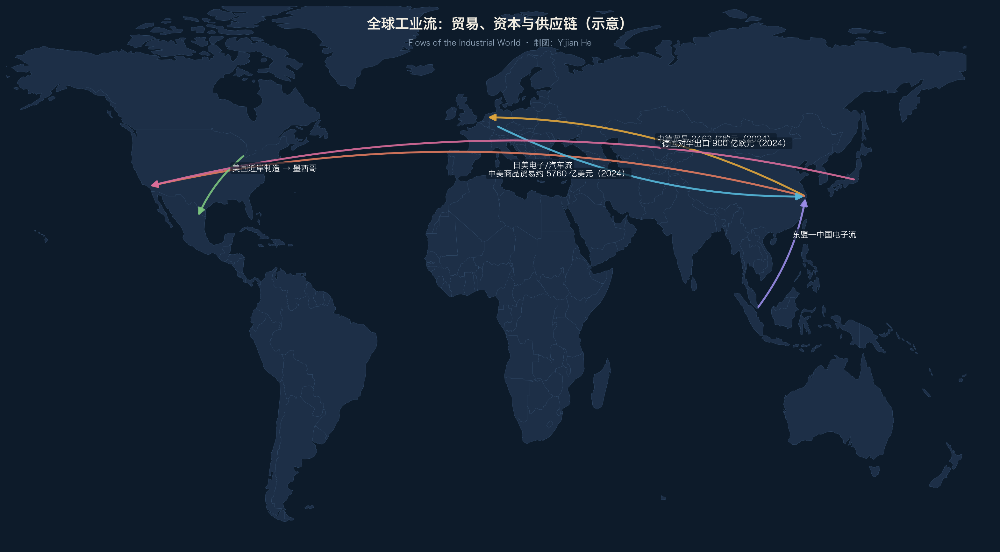

2.1 港口：世界的入口
2024 年全球集装箱港口前几名（约数）：
| 港口 | 2024 年吞吐量 | 一句话 |
|---|---|---|
| 上海 | 5150.6 万标箱 | 连续 15 年全球第一 |
| 新加坡 | 约 4100 万标箱 | 亚洲转运中心 |
| 宁波舟山 | 3930 万标箱 | 中国最大单体港群 |
| 深圳 | 约 3300 万标箱 | 珠三角出口 |
| 青岛 | 约 3000 万标箱 | 北方外贸 |
港口的本质：工业地图的“毛细血管”入口。 看一个城市有没有工业，先看它的港口吞吐量。
2.2 中德贸易：一张地图的两端
德国联邦统计局口径（2024）：
美德贸易额：2528 亿欧元（+0.1%）→ 美国重新成为德国最大贸易伙伴
中德贸易额：2463 亿欧元（-3.1%）→ 德国第二大贸易伙伴
德国对华出口：900 亿欧元（-7.6%）
德国自华进口：1563 亿欧元（-0.3%）
解读：
1. 中国在 2016–2023 年是德国最大贸易伙伴，2024 年被美国反超
2. 德国对华出口下降比进口快：汽车与机械对华销售承压
3. 但绝对值仍然巨大：中德贸易额超过德国与法国、荷兰之和（约数）
2.3 中美贸易：规模与再平衡
中美商品贸易：约 5760 亿美元（2024，美方口径）
中国对美出口：约 4000 亿美元级
美国对华出口：约 1500 亿美元级
趋势：直接贸易占比下降，但“转口”与“第三国组装”上升
中美地图上没有“脱钩”，只有“绕路”：越南、墨西哥、印度成为新的中转节点。
2.4 近岸与友岸：地图正在重画
墨西哥：美国近岸（2024 年汽车产量约 400 万辆，出口以北美为主）
越南：中国电子组装转移（三星、富士康、立讯）
印度：手机与汽车新节点（塔塔、特斯拉进入）
东欧：德国近岸（波兰、捷克、匈牙利汽车零部件）
近岸外包不是“去全球化”，而是把全球地图切成区域地图。
2.5 中国出口的结构
机电产品：占中国出口约六成（海关总署，2024 口径）
新三样：电动汽车、锂电池、光伏 —— 出口新支柱
老三样：服装、家具、家电 —— 仍是基本盘
“新三样”的意义：中国从出口“最终产品”转向出口“能源转型的设备层”。
2.6 本章小结
货物流 = 地图的血液循环
中德、中美、近岸三条主线，决定了未来十年的港口、工厂与城市
词汇笔记（Vokabelnotiz）
| 中文 | Deutsch | English |
|---|---|---|
| 标箱 | TEU（Standardcontainer） | Twenty-foot equivalent unit |
| 贸易额 | Handelsvolumen | Trade volume |
| 近岸外包 | Nearshoring | Nearshoring |
| 新三样 | die neuen drei Exportgüter | EV, battery & solar exports |